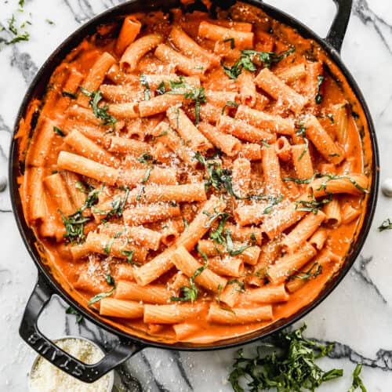

Pasta

Description
Discover the joy of creating a delicious classic pasta dish that never goes out of style. This simple and satisfying recipe is perfect for both quick weekday meals and weekend dinners. Follow our step-by-step guide to bring the authentic flavors of Italy to your table.
Ingredients
- 1 pound (450g) pasta of your choice
- 2 tablespoons olive oil
- 3 cloves garlic, minced
- 1 can (28 ounces) crushed tomatoes
- 1 teaspoon dried oregano
- 1 teaspoon dried basil
- 1/2 teaspoon red pepper flakes (optional)
- Salt and black pepper to taste
- 1/4 cup grated Parmesan cheese
- Fresh basil leaves for garnish
Steps
- Bring a large pot of salted water to a boil.
- Cook the pasta according to the package instructions until al dente. Drain and set aside.
- In a large skillet, heat olive oil over medium heat.
- Add minced garlic and sauté until fragrant.
- Stir in crushed tomatoes, dried oregano, dried basil, red pepper flakes (if using), salt, and black pepper. Simmer for 15-20 minutes.
- Add the cooked pasta to the skillet, tossing to coat evenly with the sauce.
- Sprinkle grated Parmesan cheese over the pasta and toss again.
- Serve the pasta in bowls, garnished with fresh basil leaves.